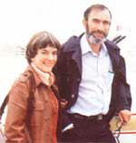
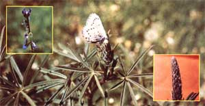

Paul Ehrlich (Bing Professor of Population Studies and Professor of Biological Sciences, Stanford University) and Anne Ehrlich (Senior Research Associate, Department of Biological Sciences, Stanford) are familiar names to ecologists and environmentalists everywhere. As well they should be. Because it was Paul and Anne who-through their writing and research-gave special meaning to the words "population" "resources", and "environment" in the late 1960's. (They also coined the term coevolution, and did a lot to make ecology the household word it is today.) But while most folks are aware of the Ehrlichs' popular writing in the areas of ecology and overpopulation (most of us-for instance-have read Paul's book The Population Bomb) ... far too few people have any idea of how deeply the Ehrlichs are involved in ecological research (research of the type that tends to be published only in technical journals and college textbooks.) That's why it pleases us to be able to present-on a regular basis-the following semitechnical column by authors/ecologists/educators Anne and Paul Ehrlich.
Until very recently, biologists seemed to think that plants just had to lie there and take it. Caterpillars chomped their leaves, aphids sucked their sap, and cows and goats slaughtered them outright. Only occasionally did plants do anything-grow spines, for instance, in the case of cactuses-to protect themselves from the onslaught of herbivores (plant eaters).
In the last decade, however, this picture of "defenseless" plants has changed completely. Biologists now realize plants have an astonishing array of defenses-both mechanical and (especially) chemical-at their disposal. Plants-we now know- do protect themselves.
Our own involvement in this revolution of understanding began in 1964 when one of us (Paul) had a series of conversations over coffee with plant evolutionist Peter Raven. Paul had asked Peter about some seemingly strange choices of food-plants made by butterfly caterpillars. For example, closely related butterfly species ate apparently unrelated plants ... but sometimes those plants-such as the ones of the citrus and carrot families fed upon by the caterpillars of certain swallowtail butterflies- contained similar chemicals. What began as casual conversations soon escalated to a ransacking of the extensive scientific literature on butterfly foods and plant chemistry.
A Glaucopsyche butterfly lays eggs on a lupine flower bud in the large photo above. The small picture inset on the left shows a caterpillar of the Glaueopsyche butterfly eating the flowers. Note the ant-which "milks" sugary secretions from special glands on the caterpillar-guarding the sluglike larva. A close-up of the Glaucopsyche eggs are shown in the small photo on the right.
In the course of this literature search, it became apparent that plants and butterflies had-over the centuries-been fighting a sort of evolutionary war. Certain poisonous "secondary" chemical compounds in the plants-it turned out were nothing less than sophisticated weapons of chemical warfare. In turn, to protect themselves, the butterflies had evolved tricks for avoiding or detoxifying (making harmless) these poisons. What's more, each new defense strategy evolved by the plants put pressure on the butterflies to evolve a new attack ... and each new strategy of attack by the insects called for a reciprocal defensive response by the plant. Paul and Peter called this kind of point- counterpoint stepwise evolution involving more than one species " coevolution".
In many cases, coevolution has led to great specialization on the part of herbivores. The swallowtail butterflies, for example, are so adept at detoxifying one kind of chemical produced by their citrus- and carrot-family hosts that the chemical has actually become an attractant!
Interestingly, human beings have long co-opted some of these plant defenses for human use. Most of the spices with which we flavor our food are defensive chemicals of plants. So are most of the hallucinogenic drugs (marijuana and opium, for example). Hallucinogens, by the way, represent a particularly clever evolutionary strategy: After all, if you're a plant, why spend the energy needed to produce massive amounts of poison if a few molecules of a psychoactive chemical can make the antelope that's just nibbled your leaves go off and attempt to mate with a lion?
Many medicines also originated as plant weapons (quinine and digitalis, for instance). Caffeine, nicotine, and cyanide are other toxins that plants use to disrupt the life processes-and blow the minds-of their animal enemies.
As the world food crisis intensifies, the demand for better methods of crop protection will increase ... and as the demand for crop protection grows, the petrochemical industry will doubtless attempt to meet that demand with the "tried and false" method of broadcast spraying with pesticides to exterminate pests. The results are monotonously predictable: huge expenses for farmers (leading to higher food prices) ... rapid evolution of resistance in pest populations ... promotion of non-pest insects to pest status as these insects' natural enemies are decimated ... medical problems for farm workers (and consumers) ... widespread damage to the ecological systems essential to the support of human society ... and-of course-high profits for pesticide manufacturers.
An understanding of plant-herbivore insect coevolution can help explain this failure of modern pest-control methods. For millennia, plant-eating insects (the "bad guys" inmost farmers' eyes) have been evolving ways to keep plants from poisoning them. This-among other factors-makes it relatively easy for these insects to evolve resistance to the poisons applied by farmers. The insect predators (the "good guys") that prey on the plant-eating insects, however, have relatively little evolutionary experience with poisons. The natural enemies of insect pests are thus sadly vulnerable to the very poisons that farmers have used to control the pests.
The interrelation of these factors was made particularly clear to us some years ago when our group was doing fieldwork in Trinidad. At the time, local farmers were having trouble with Helicanius caterpillars eating their cultivated passion fruit plants. Pesticides were cheap in Trinidad, but it seemed that the more pesticides the farmers sprayed, the worse their pest problem became. As luck would have it, the research we were doing on this Caribbean island focused on mountain populations of Heliconius butterflies ... beautiful long-winged denizens of the tropical forest that lived as adults for up to four months and laid their eggs on wild passion fruit plants.
Our investigations of the natural butterfly populations quickly gave us insight into why the Heliconius caterpillar could not be controlled with pesticides. Passion fruit plants-it so happens-have what are known as extra-floral nectaries ... little structures on the stems of leaves that ooze nectar, a sweet substance that-in most plants-is found within the flower itself. It appears that the function of these nectaries is to attract ants ... and ants are the most important enemies of young Heliconius caterpillars.
Now, as we said above, predators are almost always more susceptible to poisons than are herbivores. We ultimately concluded that the pesticides used by the passion fruit growers were wiping out the population of predatory ants that normally kept the Heliconius caterpillars under control ... while, at the same time, the caterpillars (with their long evolutionary history of feeding no-and coping with-poisonous plants) were able to evolve resistance to the manmade poisons.
In a microcosm, then, the ant-Heliconius-pesticide story is the story of all non-evolutionary agriculture. Such agriculture substitutes crude technological fixes (massive use of pesticides) for sophisticated exploitation of the evolutionary and ecological properties of the agricultural system.
Is there any way that the "almost everybody loses" scenario of past nonevolutionary agriculture pest control practices can be avoided? The answer is yes ... through integrated control procedures. Integrated control means the management of pest populations using a wide variety of techniques. Extermination is not attempted (no chemical control program has ever achieved that goal anyway) ... rather, the aim is to keep pest populations small enough so that the damage those pests do will remain at an economically acceptable level.
Integrated control programs employ such methods as crop rotation, introduction of natural enemies, enhancement of the crop's natural defenses, and (sometimes, but not always) the use of synthetic pesticides. When such pesticides are employed, they're applied only when absolutely necessary and different compounds are used at different times to retard the evolution of resistance among the pests.
The latter strategy -avoiding resistance by using a variety of pesticides (rather than assaulting the pests continually with the same poison)-has also been used by plants themselves in their coevolutionary war with pests. Our research group discovered this when we were examining the ecology of small blue Glaucopsyche butterflies and their lupine food plants in Colorado.
By a series of exercises that involved-among other things-counting butterfly eggs while biting flies ricocheted between our eyeballs and our hand-lenses, we demonstrated that the butterflies can (and do) inflict severe damage on the lupine plants. The butterflies lay their eggs on the flower buds, and their caterpillars eat the buds and flowers. Often, 50% or more of the potential seeds of the plants are devoured ... but damage varies from lupine population to lupine population.
To better understand why some lupine populations suffered more caterpillar damage than others, careful biochemical analysis of the plants was carried out. The results were surprising: Those plants in the populations that were most severely attacked by caterpillars often contained larger quantities of poisons than plants in relatively undamaged populations ... but the lightly damaged populations were made up of the plants with the most variable mix of poisons. These results led to the notion that biochemical variability itself may be an important defense mechanism of plant populations.
This only makes sense. Young pest insects feeding on a single plant are exposed to one particular mix of poisons in their food. The survivors will be those insects that happened to be somewhat resistant to that particular mix of poisons. But those survivors will lay their eggs on other plants, many of which will have a different mix of poisons. Given this situation, the population of pests cannot easily become resistant to the plant population's poisons, because generation after generation the insects face different evolutionary challenges. (By the same token, when insects are challenged by the same poison-DDT, say-over and over again, the pest population quickly becomes resistant.)
What does all this mean to you? If you're a gardener or a farmer, it means that you may be able to reduce your pest problems if you can find ways to mix the various strains of crops that you plant. (The absence of sufficient agricultural research in this area means that there are increasing opportunities for home experimentation here.)
If you aren't a gardener or farmer, but just someone who eats, breathes air, or drinks water, you should be concerned about the general problem of how to reduce pesticide usage ... because that also means reducing the chances that you (or an ecological system vital to you) will be poisoned. Research into ways of reinforcing the natural defenses of crops is one of the most obvious routes to reduced pesticide usage.
At present, the tendency is to breed most of the defensive compounds out of crops ... because these compounds tend to poison us, too (or else taste awful). But clever breeding programs to localize the toxic chemicals into parts of the plant that we don't eat (or to make the poisons disappear as the crop ripens, as is the case with apples) could well make food crops more pest-proof. Indeed, it may be possible to achieve substantial pest protection by planting fields with a mixture of biochemical types of a given crop in which the average amount of poison is low enough that the human toxicity of the harvested food is essentially nil.
You can do something to push our agricultural system in the right direction. Write to your Congressman (Washington, D.C. 20515) and urge him/her to find ways to encourage research in integrated pest management. While you're at it, mention the need for non-USDA research money. (The U.S. Department of Agriculture has-in the past-often behaved as a subsidiary of the pesticide industry. USDA research funds tend to go to the same "spray 'em again" bunch that's responsible for bringing our pest control system to what a recent National Academy of Sciences study found to be a dismal state.)
If the system can be turned around, you may once again find some (though we hope-not much) insect damage in your produce, and maybe even an occasional worm in an apple or aphid in a salad. But let's face it: A little insect protein is good for you. The dose of nerve poison (and/or carcinogen) that you're likely to get today in your fruits and vegetables is not.
For a general overview of the pesticide problem, see Chapter 11 of Ecoscience: Population, Resources, Environment, by Paul R. Ehrlich, Anne H. Ehrlich, and John P. Holdren (available for $19.95 ppd. from W. H. Freeman and Company, 660 Market St., San Francisco, Calif. 94104). For an introduction to coevolution, refer to pages 124-125 of Ecoscience and the references cited there.
|
 |
 |
|